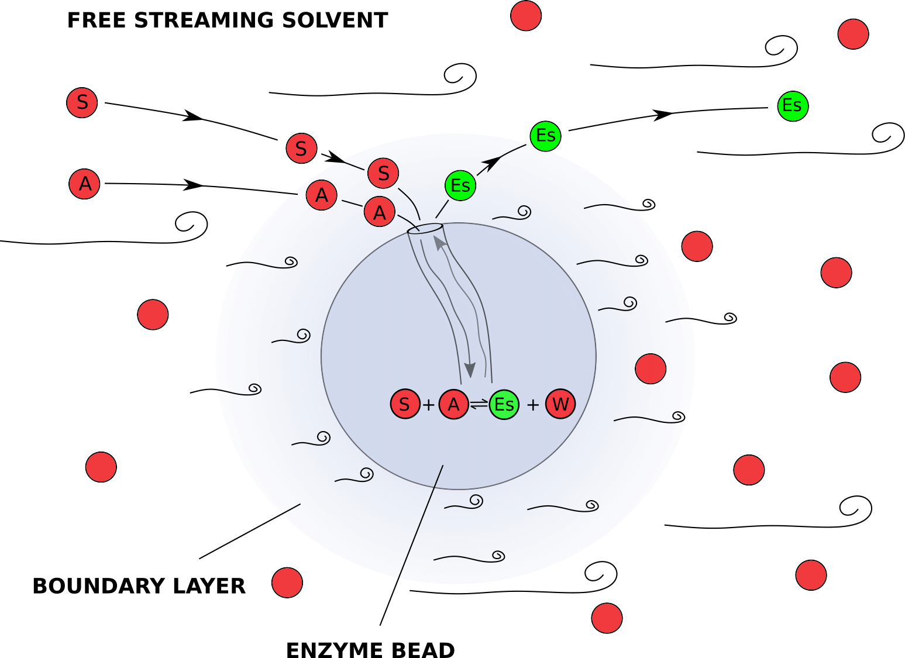

A model for the enzymatic esterification of D-glucose and Lauric acid in a continuous-flow reactor¶
This tutorial is based on: Tijs W. Alleman. (2019). Model-Based Analysis of Enzymatic Reactions in Continuous Flow Reactors (unpublished master’s thesis). Ghent University, Ghent, BE.
Introduction¶
Sugar fatty acid esters (SFAEs) are nonionic surfactants which play an important role in the food, detergent, agricultural, cosmetic and pharmaceutical industry. Because of several inherent merits and green character, the development of an enzymatic process is preferred over traditional chemical synthesis. The combination of high conversion rates per volume unit, ease of scale-up by numbering-up and inherent stability of lipases motivate the choice to synthesise SFAEs in continuous flow reactors packed with immobilised lipase. As a model reaction, the esterification of D-glucose and Lauric acid, performed in t-Butanol at 50 degrees Celcius and yielding Glucose Laurate Ester and water as products, is used.
The goal of this tutorial is to demonstrate how pySODM can be used to build a virtual prototype of a continuous flow reactor reactor packed with enzyme beads. First, an enzyme kinetic model is calibrated to time course data obtained in batch experiments. The calibrated kinetics can then be used to make predictions on how the yields in our continuous-flow reactor vary with the flow rate. I will attempt to provide a brief introduction to each of the models used in this tutorial. However, I shall cut several corners for the sake of shortening this demo (my master’s thesis is over 60 pages long).
In this tutorial pySODM is used to:
Build an ODE model to describe the reaction course in a batch experiment.
Calibrate the ODE model to timecourse data from eight experiments, performed with different initial concentrations of D-Glucose, Lauric acid and water. Each experiment thus has a different intial condition, which must be provided to the log posterior probability function.
Demonstrate how a 1D packed-bed reactor (PDE system) can be implemented in pySODM by using the method-of-lines.
Propagate the posterior distributions of the kinetic parameters through the packed-bed reactor model and asses what how the yields change in function of the flow rate.
Calibration of Intrinsic kinetics (ODE model)¶
This part of the tutorial can be replicated using ~/tutorials/enzyme_kinetics/calibrate_intrinsic_kinetics.py
Experiments and model equations¶
Multiple batch experiments were performed. For each experiment a supersaturated solution of D-glucose and Lauric acid in t-Butanol had to be prepared. First, as much water as possible had to be removed from the t-Butanol by means of 0.3 nm molecular sieves. Then, because of its low solubility in t-Butanol, a supersaturated solution of D-glucose was prepared by reflux boiling overnight. The maximum attainable concentration of D-Glucose in t-Butanol at 50 Degrees Celcius is between 40 mM and 45 mM. Next, Lauric acid was added and the mixture was transferred to a 50 mL flask suspended in an oil bath kept at 50 degrees Celcius. To start the reaction, 10 g/L of beads containing the enzyme were added to the mixture. The mixture was stirred with a magnetic stirrer throughout the reaction to avoid mass transfer limitations during the reaction course. Samples were withdrawn at regular intervals and analyzed for Glucose Laurate Ester using an HPLC-MS.
The experiments performed could be subdivided into two types:
Initial rate experiments: The reaction course is only followed during the first minutes when very little product are formed.
Full time-course experiments. In this experiment, samples are withdrawn every few hours until the reaction mixture equillibrates.
Typically, the calibration of a ping-pong bi-bi enzyme kinetic model is performed in two steps as the model equation is quite an ugly fellow (see Flores et al., 2002). First, the initial rate experiments are used to calibrate the parameters that govern the forward reaction. During an initial rate experiment, one can assume no products have been formed and thus all the terms containing products in the rate equation drop out. Second, the parameters of the backward reaction are calibrated to the full time-course experiments. For the sake of brevity, I shall glance over this two-step calibration. We will simply calibrate the following (simplified) ping-pong bi-bi kinetic model,
where,
to data from three initial rate experiments, and five full time-course experiments. In the equation, \([S]\) denotes the concentration of D-glucose, \([A]\) denotes the concentration of Lauric Acid, \([Es]\) denotes the concentration of Glucose Laurate Ester, and \([W]\) denotes the concentration of water, all in millimolar (mM). The parameters \(R_{AS}\), \(R_{AW}\) and \(R_{Es}\) can be interpreted as inhibitory constants due to their appearance in the denominator of the rate equation. \(V_f/K_S\) is typically treated as one parameter and has an impact on the initial reaction rate. \(K_{eq}\) is the equillibrium coefficient, which determines if the reaction favor the reactants or the products.
Coding it up¶
We’ll start by making a file models.py in our working directory, where we’ll group our models for this tutorial. Coding up the equations above is very similar to the simple SIR model.
from pySODM.models.base import ODEModel
class PPBB_model(ODEModel):
"""
A model for the enzymatic esterification conversion of D-Glucose and Lauric acid into Glucose Laurate Ester and water
S + A <--> Es + W
"""
state_names = ['S','A','Es','W']
parameter_names = ['c_enzyme', 'Vf_Ks', 'R_AS', 'R_AW', 'R_Es', 'K_eq']
@staticmethod
def integrate(t, S, A, Es, W, c_enzyme, Vf_Ks, R_AS, R_AW, R_Es, K_eq):
# Calculate rate
v = c_enzyme*(Vf_Ks*(S*A - (1/K_eq)*Es*W)/(A + R_AS*S + R_AW*W + R_Es*Es))
return -v, -v, v, v
We’ll then procede by making a file calibrate_intrinsic_kinetics.py in the working directory, where we’ll load and initialize this model as follows,
# Import the model from models.py
from models import PPBB_model
# Define model parameters
params={'c_enzyme': 10, 'Vf_Ks': 1.03/1000, 'R_AS': 1.90, 'R_AW': 2.58, # Forward
'R_Es': 0.57, 'K_eq': 0.89} # Backward
# Define initial condition
init_states = {'S': 46, 'A': 61, 'W': 37, 'Es': 0}
# Initialize model
model = PPBB_model(init_states,params)
The next step is loading the experimental data from the ~/tutorials/enzyme_kinetics/data folder and setting up our log posterior probability function for optimization. There are eight files, each containing data from one experiment. The data have the following structure,
df = pd.read_csv(os.path.join(os.path.dirname(__file__),'data/exp_1.csv'), index_col=0)
print(df)
S A W Es sigma
time
0 45.96 60.99 36.92 0.00 0.46
20 NaN NaN NaN 1.99 0.44
40 NaN NaN NaN 6.10 0.40
60 NaN NaN NaN 7.59 0.38
90 NaN NaN NaN 10.68 0.35
120 NaN NaN NaN 14.22 0.32
180 NaN NaN NaN 17.56 0.28
240 NaN NaN NaN 17.67 0.28
360 NaN NaN NaN 19.51 0.26
1440 NaN NaN NaN 21.02 0.25
To perform an optimization of the parameters, a log posterior probability function must be setup. We’ll load the datasets using a for statement and immediately extract three inputs to our log posterior probability function: 1) The Glucose Laurate Ester data as data, 2) the measurement error as the arguments of the log likelihood function log_likelihood_fnc_args and 3) the initial concentrations used in the experiment in initial_states. We will also construct the list of model states to match our datasets to (states), which is a list containing eight instances of the Ester state names 'Es'.
For each measurement of the Glucose Laurate ester concentration an error is available. There is thus no need to analyze the mean-variance ratio as we did in the simple SIR tutorial to find an appropriate likelihood function. We’ll use a Gaussian likelihood function and use the sigma column of our dataset as the arguments of the log likelihood function.
from pySODM.optimization.objective_functions import ll_gaussian
# Extract and sort the names
names = os.listdir(os.path.join(os.path.dirname(__file__),'data/'))
names.sort()
# Load data
data = []
log_likelihood_fnc_args = []
initial_concentrations=[]
states = []
log_likelihood_fnc = []
for name in names:
df = pd.read_csv(os.path.join(os.path.dirname(__file__),'data/'+name), index_col=0)
data.append(df['Es'])
log_likelihood_fnc.append(ll_gaussian)
log_likelihood_fnc_args.append(df['sigma'])
states.append('Es')
initial_concentrations.append(
{'S': df.loc[0]['S'], 'A': df.loc[0]['A'], 'Es': df.loc[0]['Es'], 'W': df.loc[0]['W']}
)
All that is left is to define a list containing the five model parameters we’d like to calibrate: \(V_f/K_S\), \(R_{AS}\), \(R_{AW}\),\(R_{Es}\), \(K_{eq}\), and a list containing an upper and lower bound for every model parameter. We’ll use the optional argument labels so our MCMC diagnostic figures can use fancy \(\LaTeX\) labels. Note how we didn’t define weights to our dataset, so all datasets are weighted equally. We also didn’t define prior probability functions for our parameters, this means pySODM will automatically use uniform priors using the provided bounds.
from pySODM.optimization.objective_functions import log_posterior_probability
if __name__ == '__main__':
# Calibated parameters and bounds
pars = ['Vf_Ks', 'R_AS', 'R_AW', 'R_Es', 'K_eq']
labels = ['$V_f/K_S$','$R_{AS}$','$R_{AW}$','$R_{Es}$', '$K_{eq}$']
bounds = [(1e-5,1e-2), (1e-2,10e4), (1e-2,10e4), (1e-2,10e4), (1e-2,2)]
# Setup objective function (no priors --> uniform priors based on bounds)
objective_function = log_posterior_probability(model, pars, bounds, data, states, log_likelihood_fnc, log_likelihood_fnc_args, initial_states=initial_states, labels=labels)
Now, we can use an optimization algorithm to find the set of parameters that maximizes the posterior probability. Given how we don’t have a good initial guess as the values of our parameters, we’ll use a Particle Swarm Optimization (PSO) to scan the parameter space for a global minimum. We’ll run the PSO for 30 iterations, then, we’ll use a local Nelder-Mead minimization to refine the estimate further.
from pySODM.optimization import pso, nelder_mead
if __name__ == '__main__':
# PSO
theta = pso.optimize(objective_function, swarmsize=50, max_iter=30, processes=2)[0]
# Nelder-mead
step = len(theta)*[0.05,]
theta = nelder_mead.optimize(objective_function, theta, step, processes=2, max_iter=30)[0]
We find the following estimates for our parameters,
theta = [7.13e-04, 1.00e-02, 2.40e+00, 1.00e-02, 6.33e-01]
Next, we’ll use this estimate to initiate our Markov-Chain Monte-Carlo sampler which requires the help of two functions: perturbate_theta and run_EnsembleSampler. We’ll initiate 5 chains per calibrated parameter, so 25 chains in total, by. To do so, we’ll first use perturbate_theta to perturbate our previously obtained estimate theta by 10%. The result is a np.ndarray pos of shape (5, 25), which we’ll then pass on to run_EnsembleSampler.
if __name__ == '__main__':
from pySODM.optimization.mcmc import perturbate_theta
# Perturbate previously obtained estimate
ndim, nwalkers, pos = perturbate_theta(theta, pert=[0.1, 0.1, 0.1, 0.1, 0.1], multiplier=5, bounds=bounds)
Then, we’ll setup and run the sampler using run_EnsembleSampler until the chains converge.
if __name__ == '__main__':
from pySODM.optimization.mcmc import run_EnsembleSampler
# Additional settings
n_mcmc = 1000
print_n = 50
samples_path='sampler_output/'
fig_path='sampler_output/'
identifier = 'username'
# Some usefull settings we'd like to retain (no pd.Timestamps or np.arrays allowed!)
settings={'start_calibration': 0, 'end_calibration': 3000, 'n_chains': nwalkers,
'starting_estimate': list(theta), 'labels': labels}
# Sample n_mcmc iterations
sampler = run_EnsembleSampler(pos, n_mcmc, identifier, objective_function,
fig_path=fig_path, samples_path=samples_path, print_n=print_n, backend=None, processes=processes, progress=True,
settings_dict=settings)
The output of the above procedure yields an emcee.EnsembleSampler object containing our 1000 iterations for 25 chains. We can extract the chains quite by using the get_chain() method (see the emcee documentation). However, we’re interested in building a dictionary of samples because this interfaces nicely to pySODM’s draw functions. To that end, we can use the builtin method emcee_sampler_to_dictionary(). We’ll use the corner package to visualize the distributions of the five calibrated parameters.
if __name__ == '__main__':
import corner
from pySODM.optimization.mcmc import emcee_sampler_to_dictionary
# Generate a sample dictionary and save it as .json for long-term storage
samples_dict = emcee_sampler_to_dictionary(samples_path, identifier, discard=100)
# Look at the resulting distributions in a cornerplot
CORNER_KWARGS = dict(smooth=0.90,title_fmt=".2E")
fig = corner.corner(sampler.get_chain(discard=discard, thin=2, flat=True), labels=labels, **CORNER_KWARGS)
for idx,ax in enumerate(fig.get_axes()):
ax.grid(False)
plt.show()
plt.close()
On the cornerplot we can see that the values of \(R_{AS}\) and \(R_{Es}\) are quite small, meaning we can likely drop these parameters from the model without taking a big hit in terms of goodness-of-fit. \(R_{AW}\) and \(V_f / K_S\) correlate quite strongly but we can account for this when propagating the uncertainty. The equillibrium of this reaction is shifted towards the reactants, as indicated by an equillibrium constant of \(K_{eq} = 0.64 < 1\). It is thus likely that products such as water will have to be removed during or in between reactions to attain higher yields.

Finally, we can use the draw functions to propagate the parameter samples in our model and asses the goodness-of-fit. Simulating a model is performed using the sim function. All that is left after simulating the model is to add the observational noise to the model predictions. I’ve computed the relative magnitude of the error on the datapoints and these are roughly equal to 5%. Given how we’ve used a Gaussian log likelihood function, we’ll use add_gaussian_noise() to add 5% (relative) noise to the model output.
if __name__ == '__main__':
def draw_fcn(param_dict, samples_dict):
# Always draw correlated samples at the SAME INDEX!
idx, param_dict['Vf_Ks'] = random.choice(list(enumerate(samples_dict['Vf_Ks'])))
param_dict['R_AS'] = samples_dict['R_AS'][idx]
param_dict['R_AW'] = samples_dict['R_AW'][idx]
param_dict['R_Es'] = samples_dict['R_Es'][idx]
param_dict['K_eq'] = samples_dict['K_eq'][idx]
return param_dict
# Loop over datasets
for i,df in enumerate(data):
# Update initial condition
model.initial_states.update(initial_states[i])
# Simulate model
out = model.sim(3000, N=N, draw_function=draw_fcn, samples=samples_dict)
# Add 5% observational noise
out = add_gaussian_noise(out, 0.05, relative=True)
# Visualize
fig,ax=plt.subplots(figsize=(12,4))
ax.scatter(df.index, df.values, color='black', alpha=0.6, linestyle='None', facecolors='none', s=60, linewidth=2)
for i in range(N):
ax.plot(out['time'], out['S'].isel(draws=i), color='black', alpha=0.03, linewidth=0.2)
ax.plot(out['time'], out['Es'].isel(draws=i), color='red', alpha=0.03, linewidth=0.2)
#ax.errorbar(df.index, df.values, yerr=log_likelihood_fnc_args[i], fmt='x', color='black')
ax.legend(['data', 'D-glucose', 'Glucose laurate'])
ax.set_ylabel('species concentration (mM)')
ax.set_xlabel('time (min)')
ax.grid(False)
plt.tight_layout()
plt.show()
plt.close()
The following figure shows the goodness-of-fit of the model to the time course of a reaction started with 40.5 mM D-glucose, 121.5 mM Lauric acid and 24.3 mM water present in the medium. After 16 hours, the reaction has equillibrated and \(23.0 \pm 2\ mM\) (95% CI) of Glucose Laurate ester is formed, meaning the reaction has a yield of \(57\% \pm 5\%\ mM\) (95% CI). For this enzymatic reaction, higher acid-to-sugar ratios and lower initial water concentrations lead to the highest yields. To conclude this section, I visualize the yield on a 2D grid spanning the concentrations of D-Glucose and Lauric on the y-axis (given as the acid-to-sugar ratio with 40 mM of D-Glucose used), and the water concentration on the x-axis.


Simulating a Packed-bed reactor (PDE model)¶
Model equations¶
This part of the tutorial can be replicated using ~/tutorials/enzyme_kinetics/simulate_1D_PFR.py
Our continuous flow reactor consists of a tube with an inner diameter of 2400 micrometer, packed with Novozyme 435 enzyme beads with a diameter of 475 micrometer. To give you a sense of what our continuous flow reactor looks like, a simulation was performed where 50 enzyme beads are dropped in a tube,
In a reactor packed with immoblized enzymes, mass transfer processes are often as important as the chemical reaction itself. We introduce our reactants at the reactor inlet, where they move between the catalytic beads in the free moving solvent. The enzyme is located inside the Novozyme 435 beads and the reactants undergo two processes before they reach the enzyme: 1) They diffuse from the free moving solvent stream, through the layer of slower moving solvent adhering the catalyst bead (boundary layer) to the surface of the catalyst, this is called external diffusion. 2) They diffuse inside the pores of the catalyst to an enzyme molecule, this is called internal diffusion. Finally, the reaction happens and the reverse mass transfer processes releas the product in the free moving solvent stream.

Luckily, the internal pores of the Novozyme 435 beads are quite large so internal diffusion can be ignored. This drastically simplifies our model, we only need to account for the mass transfer resistance between the free moving solvent and the surface of the catalyst. We will build a 1D model (along the axial dimension of the reactor) and assume our species are transported by diffusive and convenctive forces in the free moving solvent. The species can be transported through the liquid boundary layer to the catalyst particle surface where they can undergo the enzymatic reaction at a rate \(v^i\). This system is governed by the following equations (for a derivation, see the manuscript,
Here, \(D^i_{ax}\) is the axial dispersion coefficient, governing diffusion in the axial dimension. \(k_L a^i\) is the mass transfer coefficient from the free moving solvent to the catalyst surface and vice versa. \(\epsilon\) is the porosity of the packed bed, equal to 43%. \(\rho_B\) is the density of the Novozyme 435 beads, equal to \(435 kg/m^3\). The values of \(D^i_{ax}\) and \(k_L a^i\) were retrieved from the engineering literature, references are ommitted here for the sake of brevity.
We’ll use the method-of-lines to implement these equations in the pySODM framework. The method-of-lines consists of discretizing only the spatial derivatives to obtain a system of coupled ordinary differential equations. We’ll replace the spatial derivatives with their respective first order approximations. It is common practice to treat the convective term explictly while the diffusive term is treated implicitly.
Substituting,
All that is left before we can implement these equations in pySODM is to consider what happens at the inlet and outlet boundaries. At the inlet (\(j=0\)), we’ll assume that the species concentration in both the liquid and at the catalyst surface are equal to fixed inlet concentrations \(c^i\) provided by the user. In technical terms, this is referred to as a Dirichlet boundary condition. Mathematically,
and thus,
At the outlet (\(j=N\)), a problem arises as \(C_F^{i, N+1}\) is needed to approximate our spatial derivatives and this node is “outside” our reactor domain. We can fix this easily by treating our outlet as a no-flux boundary, mathematically,
Approximating with a central finite difference approximation,
we can thus substitute \(C_F^{i, N+1} = C_F^{i,N-1}\) at the reactor outlet.
Coding it up¶
We’ll start by coding the 1D packed PFR model in our models.py. Our model has two states with two indices:
\(C_{F}^{i,j}\) : The concentration of species \(i\) at axial location \(j\) in the freestreaming liquid.
\(C_{S}^{i,j}\) : The concentration of species \(i\) at axial location \(j\) at the catalyst surface.
We’ll use the concept of dimensions to implement these two-dimensional numpy arrays. We’ll do this by defining dimension_names = ['species', 'x']. At this point, we only need to provide a good name for our dimension, the coordinates are provided later when we initialize the model model. Additionally, we have a mass transfer coefficient \(k_La^{i}\) and an axial dispersion coefficient \(D_{ax}^i\) for every species. We can optionally assign these parameters as stratified parameters of the species axis in our model declaration by defining parameter_stratified_names = [['kL_a', 'D_ax'],]. This is not necessary, but the length of stratified parameters are contrasted to the dimension’s coordinates when the model is initialized, providing a fail safe.
The derivatives are pre-initialized as zeros and their computation is done by looping over every reacting species and then looping over all spatial nodes except the inlet node (\(j=0\)). An exception is coded at the outlet, whwere the no-flux boundary approximation is substituted in the system of equations. Stepping through these loops slows the code down and thus we decorate the integrate() function with the numba @njit decorator. Doing so speeds the code up by a factor 16.
from pySODM.models.base import ODEModel
class packed_PFR(ODEModel):
"""
A model of a packed-bed plug-flow reactor with axial dispersion in one dimension
At the surface of the catalyst, the enzymatic esterification conversion of D-Glucose and Lauric acid into Glucose Laurate Ester and water takes place
S + A <--> Es + W
"""
state_names = ['C_F', 'C_S']
parameter_names = ['delta_x', 'epsilon', 'u', 'rho_B','Vf_Ks', 'R_AS', 'R_AW', 'K_eq', 'R_Es']
dimension_names = ['species', 'x']
parameter_stratified_names = [['kL_a', 'D_ax'],]
@staticmethod
@njit
def integrate(t, C_F, C_S, delta_x, epsilon, u, rho_B, Vf_Ks, R_AS, R_AW, K_eq, R_Es, kL_a, D_ax):
# Initialize derivatives
dC_F = np.zeros(C_F.shape, dtype=np.float64)
dC_S = np.zeros(C_S.shape, dtype=np.float64)
# Reaction stochiometry
stochiometry = [-1, -1, 1, 1]
# dimension lengths
N = C_F.shape[0]
X = C_F.shape[1]
# Loop over species: S, A, Es, W
for i in range(N):
# Loop over reactor length
for j in range(1,X):
# Evaluate the enzyme kinetic model
v = (Vf_Ks*(C_S[0,j]*C_S[1,j] - (1/K_eq)*C_S[2,j]*C_S[3,j])/(C_S[1,j] + R_AS*C_S[0,j] + R_AW*C_S[3,j] + R_Es*C_S[2,j]))/60 # mmol/(s.g_catalyst)
# Intermediate nodes
if j < X-1:
dC_F[i,j] = (D_ax[i]/delta_x**2)*(C_F[i,j-1] - 2*C_F[i,j] + C_F[i,j+1]) - \
(u/delta_x)*(C_F[i,j] - C_F[i,j-1]) + \
(kL_a[i]/epsilon)*(C_S[i,j] - C_F[i,j])
# Outlet boundary
elif j == X-1:
dC_F[i,j] = (D_ax[i]/delta_x**2)*(C_F[i,j-1] - 2*C_F[i,j] + C_F[i,j-1]) - \
(u/delta_x)*(C_F[i,j] - C_F[i,j-1]) + \
(kL_a[i]/epsilon)*(C_S[i,j] - C_F[i,j])
# Solid phase
dC_S[i,j] = - (kL_a[i]/(1-epsilon))*(C_S[i,j] - C_F[i,j]) + rho_B*stochiometry[i]*v
return dC_F, dC_S
Because the model is stratified, a dictionary containing the coordinates of every dimension must be provided when initializing the model. The keys of the dictionary must match the names provided previously in dimension_names. We define the names of our four species as coordinates of the species dimension. To define a reactor of 1 m, discretized in 100 parts, we define np.linspace(start=0, stop=1, num=100) as the coordinates of the spatial axis. In the model, the states are np.ndarrays of size (4,100).
# Define coordinates
coordinates = {'species': ['S','A','Es','W'], 'x': np.linspace(start=0, stop=1, num=100)}
# Initialize model
model = packed_PFR(initial_states, parameters, coordinates)
Next, we load our previously obtained samples of the kinetic parameters and define our draw function for the kinetic parameters once more. All that is left is to validate our packed-bed model with some experimental data.
# Load samples
f = open(os.path.join(os.path.dirname(__file__),'data/username_SAMPLES_2022-12-19.json'))
samples_dict = json.load(f)
# Define draw function
def draw_fcn(param_dict, samples_dict):
idx, param_dict['Vf_Ks'] = random.choice(list(enumerate(samples_dict['Vf_Ks'])))
param_dict['R_AS'] = samples_dict['R_AS'][idx]
param_dict['R_AW'] = samples_dict['R_AW'][idx]
param_dict['R_Es'] = samples_dict['R_Es'][idx]
param_dict['K_eq'] = samples_dict['K_eq'][idx]
return param_dict
A first experiment with the continuous flow reactor was performed using a reaction mixture containing 30 mM D-glucose, 60 mM lauric acid and 28 mM water. The reactants were pumped through the reactor at a flow rate of 0.2 mL/min, resulting in an average residence time of 13.5 minutes. After ten retention times, when the outlet concentration had stabilized, three samples were withdrawn at the outlet. Then, the reactor was cut short by 0.10 m, and again three samples were withdrawn at the outlet. In this way, the reactant profile acrosss the reactor length was obtained. I omit the code to replicate the following figures from this documentation as no new concepts are introduced beyond this point. Our packed-bed model does an adequate job at describing the data.

An second experiment with the continuous flow reactor was performed using a reaction mixture containing 30 mM D-glucose, 60 mM lauric acid and 18 mM water. The reaction was initiated at a flow rate of 0.5 mL/min, which corresponded to a retention time of 5.4 minutes. The flow rate was then lowered in 0.1 mL/min increments and samples were taken at the reactor outlet after a steady-state was reached. Here, our model seems to overestimate the amount of product formed at higher flow rates, with the error becoming smaller as the flow rate becomes lower.

Because the enzyme beads are quite small compared to the tube’s inner diamter, the radial porosity profile of the packed bed is not uniform but fluctuates. As an illustration, below is the radial porosity profile of the simulated packed bed shown earlier, especially near the wall of the reactor, the porosity approaches zero. This likely cause the solvent to channel through the high porosity regions, especially when the flow rate is increased. Our model does not include a radial dimension explictly and uses the radially averaged porosity, it can thus not account for this effect.